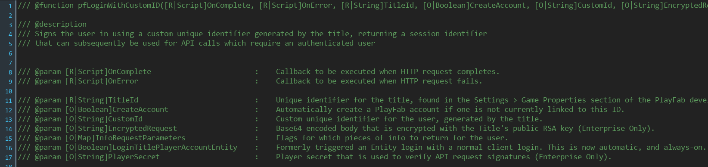
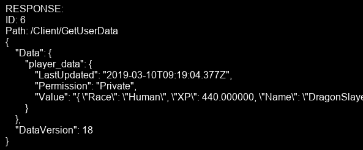

PlayFabGML
PlayFabGML is an unofficial Playfab API for GameMaker: Studio 2 written in native GML so it should work on all platforms.
I started developing PlayFabGML when I tried to implement cross-platform Cloud Saving and Leaderboards for my mobile game. Unfortunately I didn't find any cross platform cloud backend implementations for GameMaker with server side authentication.
I googled around and found PlayFab, a Cloud Backend which has a broad range of free features:
Server Side Authentication:
- DeviceID for quest/shadow login
- Google account
- Facebook account
- GameCenter account
- Steam account
- Email
Cloud Saving:
- Data sharing between multiple devices and games
- Share data with other players and groups
- Modify user data on server side with CloudScript.
- Choose data read/write access policies
Leaderboards and tournaments:
- Global and Friend leaderboards
- Reset leaderboard on set intervals
- Delete cheated scores and ban cheaters
- Gift prices to top players
Commerce:
- Load Item Catalog from backend
- Modify item names, prices and descriptions from backend.
- AB test store prices
- Receipt validation for Google Play, AppStore, Amazon etc.
Gettin Started:
- Import the PlayfabGML extension.
- Make sure you have "grp_playfab" groups in "Objects", "Scripts" and "Fonts" categories in resource tree.
- Select / create a solid object you want to initialize Playfab with, I call it "obj_networking". Drag it to a room.
-
To Create-event:
pf_init(TitleId);
- TitleId is a four letter identifier string for your game which can be got by registering a free PlayFab account and going to settings in the game manager.
- pf_init() creates a persistent "obj_playfab" object and it should be called only once at the start of the game.
Creating obj_playfab_terminal:
- "obj_playfab_terminal" is solely a tool for debugging and observing the data moving between the game client and PlayFab backend and should be disabled in a published game.
- Add another line to the Create-event:
instance_create_depth(0,0,0, obj_playfab_terminal);
- Now open the game and open the terminal in the game by pressing "Ctrl+Shift+S":

- pf_initialized: whether or not we have initialized Playfab API with pf_init();
- Processing: whether or not we are currently processing API requests
- Service Queue Size: How many API requests we have in queue
- Title ID: our game identifier set with pf_init();
- Authenticated: whether or not we have authenticated (more about that later)
- Player ID: An ID we get after we have authenticated
First request:
- There are many ways to log in / authenticate players. In this example we are going to use the simplest of them all: LoginWithCustomID
- PlayFabGML has a request scripts for all ~200 Client API Calls found from official documentation.
- In this case our request name is "LoginWithCustomId" and PlayFabGML has corresponding request script with name "pfLoginWithCustomID()"
-
Let's add third line to our Create event:
pfLoginWithCustomID();
-
After we have written the function name we can see expected arguments at the bottom of the code editor:
pfLoginWithCustomID( [R|Script]OnComplete, [R|Script]OnError, [R|String]TitleId, [O|Boolean]CreateAccount, [O|String]CustomId, [O|String]EncryptedRequest, [O|Map]InfoRequestParameters, [O|Boolean]LoginTitlePlayerAccountEntity, [O|String]PlayerSecret );
- We can also open the script and see a more detailed description for the request:
 -
Looks scary doesn't it? Don't worry, it's not that bad. Let's look at the first argument:
[R|Script]onComplete
- "R" in argument stands for "Required", meaning that our request fails without it.
- "Script" means that the argument type is a script
- onComplete is a callback script which is called when we get a successful response from the server, the received response map as an argument.
[R|Script]onError
- A callback script which is called if/when our request fails.
- Create two empty callback scripts "loginOnComplete", and "loginOnError"
- Now our request should look like:
pfLoginWithCustomID(loginOnComplete, loginOnError);
-
The third argument is [R|String]TitleId. We can get our TitleId by calling "pf_get_title_id()"
pfLoginWithCustomID( loginOnComplete, loginOnError, pf_get_title_id() );
-
Fourth argument is [O|Boolean]CreateAccount which defines whether or not we want to create a new account if none exists. Let's set it to true.
- Did you notice that this arguments had "O" which means it is optional? We have already included all required arguments
-
Fifth argument is "[O|String]CustomId" which is our user id. Let's set it to "pf_get_installation_id()"
-
Now our code should look like this:
// Create-event pf_init("YOUR_TITLE_ID"); instance_create_depth(0,0,0, obj_playfab_terminal); pfLoginWithCustomID( loginOnComplete, loginOnError, pf_get_title_id(), pf_get_installation_id() );
-
Let's run our project and press "Ctrl+Shift+S" to show terminal:

-
If everything went well we should have three fields visible:
- REQUEST: the request we sent in JSON format (text representation of Map data structure)
- RESPONSE: the response we got from PlayFab backend in JSON format. (By default this only shows the part of the response which is returned to "onComplete"/"onError" callback script, if you want to see headers and HTTP codes you can modify settings in "pf_terminal_init()" )
- CALLBACK: which callback script was called
-
You can also see that our values have changed at the top:
- Authenticated should now be true meaning we are logged in and ready to use other requests which require authenticated user
- Player ID should now have our user id
- Hurray! We are now logged in and ready to do more interesting stuff!
Cloud Saving
- The following code can be written in any object, but you should make sure it is persistent if receiving the data is crucial (if the instance which called the request is destroyed, the callback fails silently on background).
-
Like almost everything in PlayFab, uploading to backend happens in key-value pairs. Let's start by making a map for player data:
// Create-event player_data = ds_map_create();
ds_map_set(player_data, "Health", 77); ds_map_set(player_data, "XP", 440); ds_map_set(player_data, "Name", "DragonSlayer666"); ds_map_set(player_data, "Race", "Human"); - User data can be sent by using UpdateUserData request:
pfUpdateUserData( [R|Script]OnComplete, [R|Script]OnError, [O|Map]Data, [O|List]KeysToRemove, [O|String]Permission );
-
The request takes two callback scripts (your can use empty ones for now) and data map (in which we wrap our player_data map as a JSON string with json_encode() ). We don't want to remove keys or update permissions so we can forget the last two arguments:
var data = ds_map_create(); ds_map_set(data, "player_data", json_encode(player_data)); pfUpdateUserData(updateUserDataOnComplete, updateUserDataOnError, data);
- Lists and maps given as arguments are automatically cleared from memory after the request has completed so don't worry about destroying the data map. (And always use map_copy() if you give an important map as an argument).
-
We want our request to happen only in certain situation (keyboard_check_pressed() for this example) and when we are authenticated:
// Step-event if keyboard_check_pressed(ord("U")) and pf_is_authenticated() { var data = ds_map_create(); ds_map_set(data, "player_data", json_encode(player_data)); pfUpdateUserData(updateUserDataOnComplete, updateUserDataOnError, data); }
-
If everything went fine we should see this after pressing "U" and opening terminal:

- You can scroll the terminal vertically by pressing Shift and scrolling with mouse
-
We can make sure the data is uploaded correctly by going to PlayFab Game Manager --> Choose TitleId --> Players tab --> Latest logged in player --> Player Data (Title)

- You can also upload nested maps and lists for more complex systems!
Loading saves
- Loading user data happens with GetUserData request with following arguments:
pfGetUserData( [R|Script]OnComplete, [R|Script]OnError, [O|uint32]IfChangedFromDataVersion, [O|List]Keys, [O|String]PlayFabId );
- All request arguments expect callback functions are optional so this one should be easy (once again, leave callback functions empty for now):
// Step-event if keyboard_check_pressed(ord("L")) and pf_is_authenticated() { pfGetUserData(getUserDataOnComplete, getUserDataOnError); }
-
After pressing "L" we should get a following response

- (You can scroll horizontally with Shift + mouse scroll to see the whole response)
-
Great, we received our player_data but how can we actually use it and copy it to our player_data map? So far we have been only creating empty callback scripts but now is the time to write some code there. Open your getUserDataOnComplete():
var _body = argument0; var _player_data = map_nested_get(_body, "Data", "player_data", "Value"); if is_string(_player_data) and (_player_data != "") { _player_data = json_decode(_player_data); if ds_exists(_player_data, ds_type_map) { player_data = map_copy(_player_data); player_data_loaded = true; //show_message("Player data loaded: \n"+json_encode(_player_data)); exit; } } //show_message("Player data not found from backend :/");
- Callback functions get called with response body as the first argument
- PlayfabGML has function map_nested_get() which makes accessing nested data structures a lot easier (works with lists too, just use index value instead of key name)
- Tries to parse the player_data json string from the response body and decodes it in into a map.
- Response body (and all its nested data structures) are destroyed automatically after callback script is executed so no need to stress about deleting it (this is why we use map_copy() before saving it to player_data
- "player_data_loaded" is set to true, with it you can test whether or not player_data has been loaded from server (remember to set it to false in create event)
Getting TitleData
-
In GameManager --> Content --> TitleData you can defined general key value pairs for the game title every user can load. This is helpful place to keep data like game translations, oldest valid game version for leaderboards, data for events like daily challenges etc
-
In many cases like this you want to perform some requests as soon as the game client is authenticated. One could handle the situtation like this:
// Create:
authenticated = false;
// Step:
if (!authenticated and pf_is_authenticated()) {
getTitleData(titleDataOnComplete, titleDataOnError)
authenticated = true;
}
-
PlayFabGML has slightly easier way to handle this:
// Create:
pf_event_perform_when_authenticated(ev_user0);
// User Event 0:
pfGetTitleData(getTitleDataOnComplete, getTitleDataOnError);
- pf_event_perform_when_authenticated(user_event) performs an user event defined by the argument when the client has successfully authenticated with any of the login methods.
- We could even define which exact key-value pairs we want. pfGetTitleData takes third argument [O|List]Keys which is a list of all key-value pairs we want to load. We could use code:
var keys = ds_list_create();
ds_list_add(keys, "LatestVersion", "OldestValid");
pfGetTitleData(getTitleDataOnComplete, getTitleDataOnError, keys);
-
To make things easier PlayfabGML accepts JSON strings as arguments if argument type is list or map.
pfGetTitleData(getTitleDataOnComplete, getTitleDataOnError, @'["LatestVersion", "OldestValid"]');
-
To avoid having to use escape characters with quotes in json string we used @ string literal identifier
-
Our resonse should look like this:

-
And once again we could access the data by modifying the getTitleDataOnComplete callback script (for example):
var _body = argument0;
var _oldest_valid = map_nested_get(_body, "Data", "OldesValid");
_oldest_valid = real(_oldest_valid);
if (_oldest_valid < global.game_version) {
show_message("Update to newer game version to keep using leaderboards.");
global.can_use_leaderboards = false;
}
// Create: authenticated = false; // Step: if (!authenticated and pf_is_authenticated()) { getTitleData(titleDataOnComplete, titleDataOnError) authenticated = true; }
// Create: pf_event_perform_when_authenticated(ev_user0); // User Event 0: pfGetTitleData(getTitleDataOnComplete, getTitleDataOnError);
- pf_event_perform_when_authenticated(user_event) performs an user event defined by the argument when the client has successfully authenticated with any of the login methods.
var keys = ds_list_create(); ds_list_add(keys, "LatestVersion", "OldestValid"); pfGetTitleData(getTitleDataOnComplete, getTitleDataOnError, keys);
pfGetTitleData(getTitleDataOnComplete, getTitleDataOnError, @'["LatestVersion", "OldestValid"]');
- To avoid having to use escape characters with quotes in json string we used @ string literal identifier
var _body = argument0; var _oldest_valid = map_nested_get(_body, "Data", "OldesValid"); _oldest_valid = real(_oldest_valid); if (_oldest_valid < global.game_version) { show_message("Update to newer game version to keep using leaderboards."); global.can_use_leaderboards = false; }